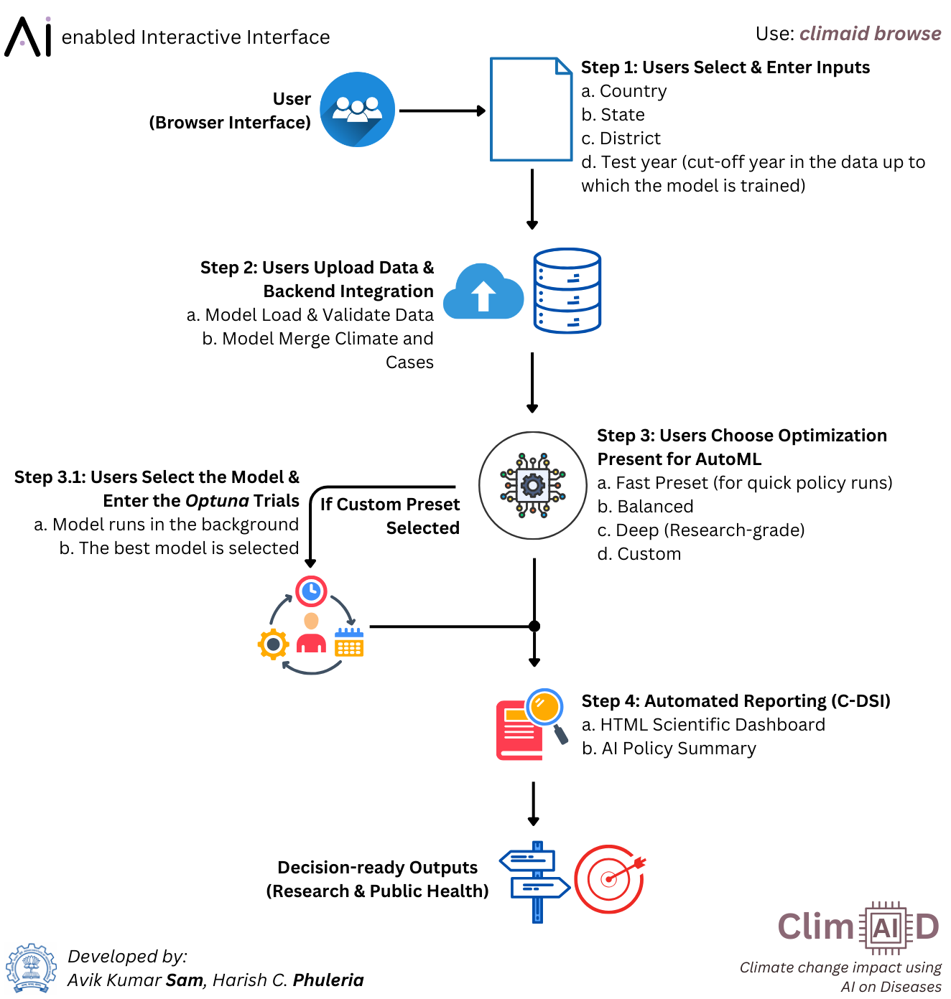
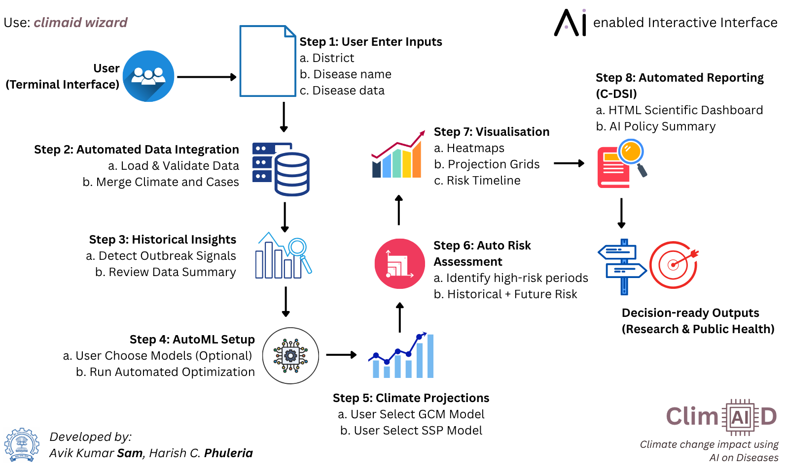

ClimAID - Climate change impact using AI on Diseases¶
Under active testing — version 0.4.0 (beta)
ClimAID 0.4.0 is under active testing. Its methods have been checked on synthetic data with a known answer, but not yet validated on real surveillance data or real CMIP6 projections. Treat outputs as research estimates, check them against local knowledge, and do not use them as the sole basis for public-health decisions. See Status & validation for what has and has not been tested.
ClimAID is an integrated toolkit for modelling, forecasting and projecting climate-sensitive diseases such as dengue and malaria, using machine learning, a climate-informed transmission model and climate-model ensembles.
- ClimAID has built-in climate data for South Asian countries: India, Nepal, Bhutan, Sri Lanka, Myanmar, Afghanistan, Pakistan and Bangladesh.
- Data from other countries are supported through the global mode of the browser interface.
Two pipelines¶
| ClimAID v2 (recommended) | ClimAID v1 (legacy) | |
|---|---|---|
| Purpose | Forecasts for the coming months, and climate-scenario outlooks to 2050–2100 | Lag-optimised point predictions and CMIP6 projections |
| Output | Expected cases with likely ranges | Expected cases |
| Models | 21, including a climate transmission model and v1's stacked model | Stacked base → residual → correction models |
| Checked by | Held-out months, rolling backtests ("hindcasts"), calibrated ranges | One test year |
| Report | Plain-language summary + technical details | C-DSI deterministic report |
What you can do¶
- Analyse historical disease patterns and detect past outbreak signals
- Link cases to temperature, rainfall, humidity and El Niño (ENSO), including lagged and interaction effects
- Forecast the coming months with likely ranges that are calibrated against past performance
- Compare 21 models, all tuned automatically, against a simple "same as recent years" baseline
- Project how cases could change under CMIP6 climate scenarios, with uncertainty from climate models, statistics and model structure
- Generate reports written for non-specialists, with full technical details for specialists
Installation¶
pip install climaid # core
pip install "climaid[ml]" # + XGBoost, LightGBM, CatBoost
pip install --upgrade climaid # upgrading from 0.1.x: read the Changelog first
Python 3.10 or newer. Package on PyPI: pypi.org/project/climaid.
Quick examples¶
from climaid.climaid_model import DiseaseModel
dm = DiseaseModel(district="IND_Pune_MAHARASHTRA", disease_file="dengue.xlsx", disease_name="Dengue")
result = dm.forecast_v2(
forecast_origin="2023-12-31", # use data up to this date
horizon=12, # months ahead
tuning="balanced", # fast | balanced | deep (tuning is always on)
run_hindcasts=True, # backtests used to calibrate the likely ranges
save_report=True,
)
print(result["report_path"])
outlook = dm.project_v2(end_year=2050, ssps=["ssp245", "ssp585"])
print(outlook["decades"]) # change per decade vs. the historical baseline
print(outlook["report_path"])
dm.optimize_lags()
dm.train_final_model()
Workflow¶
ClimAID has two interfaces.
-
ClimAID Browser Interface (South Asian and global countries)
The dashboard has separate v2 (default) and v1 pages. Every setting has an ⓘ tip explaining it.climaid browse
Figure 1: Guide to the ClimAID Browser Interface.
-
ClimAID Wizard Interface (South Asian countries)
The wizard asks which pipeline to run (v1, v2 or both) and only asks that pipeline's questions.climaid wizard
Figure 2: Guide to the ClimAID Wizard Interface.
-
This documentation, offline
Opens the copy of this site that ships with your installation (also linked from the dashboard atclimaid docs/documentation/).
Documentation¶
- Status & validation — what has been tested, results, known limitations
- v2 forecasting — models, tuning, backtests and calibrated ranges
- Climate scenario outlook — how projections are made and how to read them
- Reading the reports — the plain-language report and its trust rating
- Benchmarks & synthetic data — how ClimAID is tested
- Changelog — what changed in 0.4.0, including changes that alter results
- API reference for all modules (sidebar)
Designed for¶
- Epidemiologists
- Climate scientists
- Public health analysts
- Data scientists
Development underway¶
- Validation on real surveillance data across multiple districts (priority)
- More models
- Spatiotemporal ML models
- Integrated SEIR-ML hybrid framework
- More user choices
- Selection of covariates; user-supplied covariates
- Selection of LLMs through the browser interface
- For technical feedback, please email: avik.sam@iitb.ac.in
Dependencies & License¶
Dependencies¶
-
Core requirements (installed automatically)
numpy pandas scipy scikit-learn joblib optuna matplotlib seaborn plotly markdown fastapi uvicorn python-multipart pydantic typer openpyxl requests pooch -
Optional gradient-boosting libraries (XGBoost, LightGBM, CatBoost)
pip install "climaid[ml]" -
Optional local LLM reports
Install Ollama and start it with
ollama serve. ClimAID connects to it over HTTP; no extra Python package is needed. Without it, ClimAID uses its built-in deterministic C-DSI reports.
License¶
Designed by Avik Kumar Sam & Harish C. Phuleria as open-access software.
-
MIT License summary
- Free to use, modify and distribute
- Suitable for research and commercial use
- No warranty is provided
- Attribution is required
-
Full licence text: https://github.com/sam-as/ClimAID/blob/main/LICENSE
We thank the National Disease Modelling Consortium for their support.